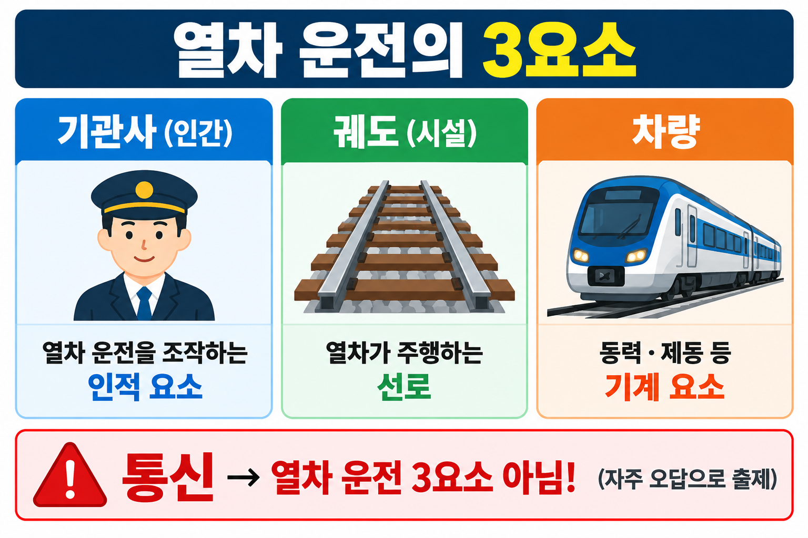
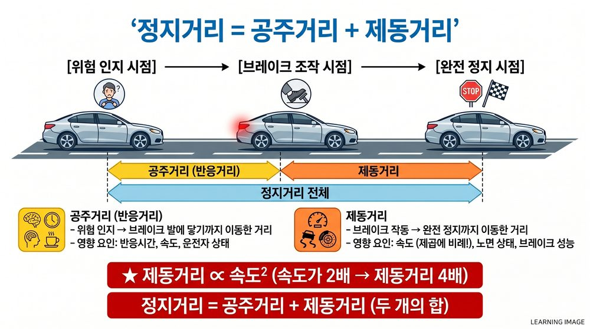

§0 선행 용어
운전의 3요소
기관사 · 궤도 · 차량
열차 운전 성립에 반드시 필요한 3가지 요소
동력집중식
기관차 1대가 객차를 견인하는 방식
장거리·대량 수송 / 유지보수 용이
동력분산식
여러 차량에 동력이 분산 탑재된 방식
가속력 우수 / 상구배 유리 (전동차·KTX 등)
공주거리
제동 조작 후 실제로 감속이 시작될 때까지 이동한 거리
공주거리 = 속도 × 반응시간
사행동 (Hunting)
차륜이 레일 위에서 좌우로 반복 진동하는 현상
1차(차축) vs 2차(대차) 구분이 시험 핵심
LIM
Linear Induction Motor. 선형 유도전동기
직선 추진력 발생 / 급구배·급곡선에 유리
회생제동
전동기를 발전기로 전환 → 전차선에 전기 반환
도시철도·KTX 주력 / 에너지 20~30% 절감
관절대차
두 차량이 하나의 대차를 공유하는 구조
곡선 통과 우수 / 승차감 향상
§1 열차 운전의 3요소
열차 운전의 3요소: 기관사 · 궤도 · 차량
열차 운전이 성립하기 위해 반드시 필요한 3가지 요소입니다. 통신은 보조적 요소로 3요소에 포함되지 않습니다.
- 기관사: 열차를 직접 조작·운전하는 인적 요소
- 궤도: 열차가 달리는 레일·선로 시설
- 차량: 열차 차체·기관차·동력장치
📌 PRIMARY VIS — 열차 운전의 3요소 (VIS-079)

§2 동력집중식 vs 동력분산식
| 구분 |
동력집중식 |
동력분산식 |
| 원리 |
기관차 1대가 동력을 집중하여 객차 견인 |
여러 차량에 동력(견인전동기) 분산 탑재 |
| 대표 차량 |
디젤기관차·전기기관차가 견인하는 무궁화열차 |
전기동차, ITX새마을, KTX |
| 가속력 |
낮음 ↓ |
높음 ↑ |
| 상구배 |
불리 |
유리 |
| 유지보수 |
간단 (기관차만) |
복잡 (각 차량 분산) |
| 구조 |
단순 |
복잡 |
| 장거리·대량 수송 |
적합 |
도심 단거리에 유리 |
| 객실 소음 |
낮음 |
각 차량 모터→ 높을 수 있음 |
전동차 정의: 동력분산식 전기차량. 여러 차량에 견인전동기가 장착되어 별도의 기관차 없이 전차선으로부터 전기를 받아 자력 운행합니다. 전기기관차(동력집중식)와 구별되는 핵심 특징입니다.
§3 관절대차 · 고정축거
- 두 차량이 하나의 대차를 공유하는 구조
- 곡선 통과 성능 우수 / 승차감 향상
- 단점: 구조 복잡 → 중량 증가 (가볍지 않음)
⚠ 함정: "무게가 가볍다" → 오답. 관절대차는 중량이 늘어납니다.
§4 제동방식 분류
4-1. 전기제동 3종 (암기: 발·회·와)
| 제동 방식 |
원리 |
에너지 처리 |
특징 |
| 발전제동 |
견인전동기를 발전기로 전환 → 저항기에서 열로 소모 |
열 소멸 |
전차선 불필요 / 속도 저하 시 제동력 약화 |
| 회생제동 |
발전기로 전환 → 전기를 전차선으로 반환 |
전차선 반환 |
도시철도·KTX 주력 / 에너지 20~30% 절감 |
와류제동
(맴돌이전류) |
전자석으로 와전류 발생 → 제동력 |
열 소멸 |
레일 접촉 없이 제동 / 고속 구간 사용 |
4-2. 기계제동 및 공기제동
| 제동 방식 |
원리 |
용도 |
| 공기제동 |
압축공기로 브레이크 패드/슈를 바퀴·디스크에 밀착 |
모든 열차 공통 기본 제동 / 비상·정차 유지 |
| 수용제동 |
회생전력을 차량 내부 부하(냉난방·저항기)에서 소비 |
회생제동 불가 시 보조 수단 |
| 레일제동 |
궤도 위에 전자석을 밀착 → 자력으로 직접 제동 |
기계적·자기적 직접 제동 (전기제동 아님) |
⚠ 함정: 레일제동은 전기제동이 아니다
전기제동 3종 = 발전제동 · 회생제동 · 와류제동
레일제동은 전자석을 이용하지만 전기제동 분류에 포함되지 않는 기계적 제동
⚠ 함정: "자연제동"은 정식 제동방식이 아니다
열차 제동방식: 공기제동 · 발전제동 · 회생제동 · 수용제동 등
"자연제동"은 시험에서 함정 선택지로 출제됨
§5 사행동 (Hunting)
사행동: 차륜이 레일 위에서 좌우로 반복 진동하는 현상. 파장 약 14m.
| 구분 |
1차 사행동 (차축 사행동) |
2차 사행동 (대차 사행동) |
| 발생 속도 |
비교적 낮은 속도 |
특정 임계속도 이상 |
| 속도 증가 시 |
진동 감쇠 (줄어듦) |
감쇠 안 됨 → 오히려 증폭 |
| 파장 |
약 14m |
1차에 비례하지 않음 |
| 궤간 관계 |
궤간 넓을수록 커짐 |
궤간 좁을수록 커짐 (반비례) |
| 답면기울기 |
클수록 작아짐 |
— |
사행동 저감 방법 (파장을 크게 → 사행동 최소화)
- 차륜 지름 크게
- 차륜 답면 기울기 작게
- 고정축간 거리(축거) 크게
- 대차의 선회저항 크게
⚠ 함정: 2차 사행동의 궤간 관계
"2차 사행동은 궤간이 좁을수록 작아진다" → 오답
2차 사행동은 궤간에 반비례 → 궤간 좁을수록 커진다
§6 차체 3축 회전운동
| 명칭 |
운동 방향 |
설명 |
| 롤링 (Rolling) |
좌우 흔들림 |
차체가 진행방향 축을 중심으로 좌우로 기울어지는 운동 |
| 피칭 (Pitching) |
앞뒤 들썩임 |
차체가 폭방향 축을 중심으로 앞뒤로 들썩이는 운동 |
| 요잉 (Yawing) |
수평 비틀림 |
차체가 수직축을 중심으로 수평면 내에서 좌우 비틀리는 운동 |
⚠ 함정: "곡률변화"는 차량 진동 종류가 아니다
차량 진동 = 롤링 · 피칭 · 요잉 (3종)
"곡률변화"는 선로 형태를 나타내는 용어지 진동 종류가 아님
§7 냉동사이클 · LIM · 보호장치
7-1. 냉동사이클 순서
냉동사이클 순서 (암기: 압응팽증): 압축 → 응축 → 팽창 → 증발
- 압축: 압축기에서 냉매 고온·고압으로 압축
- 응축: 응축기에서 열 방출 → 냉매 액화
- 팽창: 팽창밸브에서 압력 저하 → 냉매 저온·저압
- 증발: 증발기에서 열 흡수 → 냉각 효과 발생
7-2. LIM (선형 유도전동기)
- 회전 운동 없이 직선 운동으로 추진력 발생
- 회전형 유도전동기를 평면 형태로 전개한 구조
- 점착력에 크게 의존하지 않아 급구배·급곡선 운행에 유리
- 기어·차륜 마모 감소 (구동부가 회전하지 않음)
- 1차 코일 전류 → 이동자계 형성 → 2차 도체(레일)에 유도전류 → 추진력
⚠ 함정: "급구배 운행에 불리하다" → 오답. LIM은 오히려 유리합니다.
7-3. 보호장치 (피뢰기 구분)
| 장치 |
보호 대상 |
작동 조건 |
| 직류피뢰기 |
교류모진 시 회로 보호 |
교류 전원이 직류 회로에 침입할 때 |
| 주퓨즈 |
직류모진 시 회로 보호 |
직류 과전류 발생 시 |
| 교류피뢰기 |
낙뢰·서지전압으로부터 보호 |
급격한 이상 전압 발생 시 |
| ADCg |
교직류 절환 |
교류↔직류 구간 이행 시 |
§8 열차저항과 곡선저항
열차저항 4종: 주행저항 · 기울기저항(구배저항) · 곡선저항 · 가속저항
- 주행저항: 공기저항, 레일·차륜 마찰 등 주행 중 항상 발생하는 저항
- 구배저항: 경사진 선로 주행 시 중력 성분에 의한 저항
- 곡선저항: 곡선 선로 주행 시 원심력·플랜지 마찰 등에 의한 저항
- 가속저항: 가속 시 관성력 극복에 필요한 저항
곡선저항 산정 공식 (모리슨 공식)
R = 700 / f (kg/ton)
f = 곡선반경(m). 제안자: 모리슨
조지 스티븐슨(증기기관차 발명), 킹덤 브루넬(현수교), 조지 웨스팅하우스(공기제동)와 혼동 주의
§9 공주거리 · 제동거리
| 구분 |
정의 |
계산 |
| 공주거리 |
제동 조작 후 실제 감속이 시작될 때까지 이동한 거리 |
= 속도 × 반응시간 |
| 제동거리 |
실제 감속이 시작된 후 완전히 정지할 때까지 이동한 거리 |
감속도와 속도에 의존 |
| 정지거리 |
공주거리 + 제동거리 |
총 이동 거리 |
📌 CROSS-REF — 정지거리 도해 (VIS-009)

§10 시험 핵심 포인트
✅ 운전의 3요소: 기관사 · 궤도 · 차량
통신은 포함되지 않음. 선택지에서 "통신"이 있으면 오답.
✅ 동력분산식 단점: 객실 내 소음이 높을 수 있음
각 차량에 모터 → 소음 증가. "소음이 낮다"가 함정 선택지.
✅ 전기제동 3종: 발전·회생·와류 (레일제동은 제외)
"수용제동"은 전기제동이 아니라 별도 방식으로 분류.
✅ 냉동사이클: 압축→응축→팽창→증발 (암기: 압응팽증)
증발이 마지막 단계. "증발→압축→팽창→응축" 순서 함정 주의.
✅ LIM: 급구배·급곡선에 유리
"불리하다"가 선택지에 있으면 오답.
✅ 관절대차: 중량 증가 (가볍지 않음)
"무게가 가볍다" → 오답. 두 차량 공유 → 구조 복잡 → 중량↑
✅ 2차 사행동: 속도 증가해도 감쇠 안 됨 (오히려 증폭)
1차는 속도 높아지면 감쇠. 2차는 임계속도 이상에서 증폭.
✅ 곡선저항 R=700/f 제안자: 모리슨
조지 스티븐슨·웨스팅하우스 등과 혼동 주의.
📝 기출문제 (19문항)
rk_ch83_29 · SOURCE: 3.html C-28
Q01
열차 운전의 3요소에 해당하지 않는 것은?
- ① 궤도
- ② 통신
- ③ 차량
- ④ 기관사
rk_ch83_36 · SOURCE: 3.html C-24
Q02
동력집중식 특징으로 틀린 것은?
- ① 소음이 크다
- ② 유지보수가 간단하다
- ③ 효율이 높다
- ④ 가속력이 떨어진다
rk_ch83_37 · SOURCE: 3.html C-24
Q03
동력집중식의 장점으로 옳지 않은 것은?
- ① 구조가 단순하다
- ② 유지보수가 용이하다
- ③ 상구배(오르막)에서 유리하다
- ④ 장거리·대량 수송에 적합하다
rk_ch83_38 · SOURCE: 3.html C-24
Q04
동력집중식 차량으로 맞는 것은?
- ① ITX새마을
- ② 전기동차
- ③ 디젤동차가 견인하는 무궁화열차
- ④ 디젤기관차가 견인하는 무궁화열차
rk_ch83_39 · SOURCE: 3.html C-24
Q05
동력분산식의 장점으로 아닌 것은?
- ① 객실 내 소음 수준이 낮다
- ② 가속 성능이 우수하다
- ③ 에너지 효율이 높다
- ④ 승차감이 우수하고 정차·출발이 부드럽다
rk_ch83_13 · SOURCE: 3.html C-24
Q06
전동차의 정의로 옳은 것은?
- ① 전기 에너지를 이용하여 차량 여러 대에 동력이 분산된 자력 운행 차량
- ② 전기 에너지를 받아 한 대의 기관차가 객차를 끄는 집중식 철도차량
- ③ 디젤엔진으로 발전기를 돌려 전동기를 구동하는 차량
- ④ 전기를 사용하지만 기관차에 동력이 집중된 차량
rk_ch83_35 · SOURCE: 3.html C-25
Q07
관절대차 특징으로 아닌 것은?
- ① 곡선 통과 성능이 우수하다
- ② 두 차량이 하나의 대차를 공유한다
- ③ 무게가 가볍다
- ④ 승차감이 향상된다
rk_ch83_08 · SOURCE: 3.html C-23 C-29
Q08
전기제동방식이 아닌 것은?
- ① 와류제동
- ② 회생제동
- ③ 레일제동
- ④ 발전제동
rk_ch83_33 · SOURCE: 3.html C-23 C-29
Q09
기계적 제동장치로 맞는 것은?
- ① 와전류제동
- ② 수용제동
- ③ 전자제동
- ④ 회생제동
rk_ch83_34 · SOURCE: 3.html C-23
Q10
열차 제동방식이 아닌 것은?
- ① 발전제동
- ② 자연제동
- ③ 수용제동
- ④ 회생제동
rk_ch83_16 · SOURCE: 3.html C-30
Q11
주행 속도를 높여도 감쇠되지 않는 사행동은?
- ① 1차 사행동
- ② 2차 사행동(대차사행동)
- ③ 차량 전체 사행동
- ④ 축간 사행동
rk_ch83_17 · SOURCE: 3.html C-30
Q12
열차의 사행동에 대한 설명으로 옳지 않은 것은?
- ① 1축 사행동은 궤간이 넓을수록 커지고, 차륜 답면의 구배가 클수록 작아진다
- ② 2축 사행동(대차사행동)은 1축 사행동에 비례한다
- ③ 2축 사행동(대차사행동)은 궤간이 좁을수록 작아지고, 축거가 길수록 작아진다
- ④ 1축 사행동은 속도가 높아지면 진동수가 높아지고 14m의 파장을 갖는다
rk_ch83_18 · SOURCE: 3.html C-30
Q13
대차 사행동을 줄이는 방법으로 옳은 것은?
- ① 차륜 지름을 작게 한다
- ② 차륜답면 기울기를 크게 한다
- ③ 고정축 간거리를 작게 한다
- ④ 대차의 선회저항을 크게 한다
rk_ch83_32 · SOURCE: 3.html C-31
Q14
차량진동 종류가 아닌 것은?
- ① 롤링
- ② 피칭
- ③ 요잉
- ④ 곡률변화
rk_ch83_01 · SOURCE: 3.html C-32
Q15
철도차량의 공기조화장치(냉방장치)의 냉동사이클 순서는?
- ① 증발→압축→팽창→응축
- ② 압축→응축→팽창→증발
- ③ 압축→팽창→응축→증발
- ④ 응축→압축→증발→팽창
rk_ch83_04 · SOURCE: 3.html C-32
Q16
LIM에 대한 설명으로 옳지 않은 것은?
- ① LIM은 회전 운동을 하지 않고 직선 운동을 통해 추진력을 얻는 전동기이다
- ② 회전형 유도전동기를 평면 형태로 전개한 구조이다
- ③ LIM 구동 방식은 일반 철도에서 사용하는 차륜 구동 방식보다 급구배(경사) 운행에 불리하다
- ④ 구동부가 회전하지 않아 기어나 차륜의 마모가 줄어든다
rk_ch83_15 · SOURCE: 3.html C-32
Q17
차량에 설치된 선형 유도전동기를 이용하여 레일과의 점착에 크게 의존하지 않고 추진력을 얻으며, 급구배·급곡선에 유리한 방식의 차량은?
- ① LIM
- ② 모노레일
- ③ 바이모달트램
- ④ AGT
rk_ch83_09 · SOURCE: 3.html C-27
Q18
교류모진이 발생할 때 작동하여 회로를 보호하는 장치는?
- ① ADCg
- ② 주퓨즈
- ③ 직류피뢰기
- ④ 교류피뢰기
rk_ch83_11 · SOURCE: 3.html C-34
Q19
철도 차량이 곡선 선로를 주행할 때 발생하는 곡선저항을 산정하기 위한 공식인 'R=700/f (kg/ton)'을 제안한 인물은?
- ① 조지 스티븐슨
- ② 킹덤 브루넬
- ③ 조지 웨스팅하우스
- ④ 모리슨
✅ 정답 및 해설
통신은 운전의 보조적 요소. 열차 운전의 3요소 = 기관사 · 궤도 · 차량. 통신은 포함되지 않는다.
"소음이 크다"는 동력집중식의 특징이 아니라 동력분산식(각 차량 모터)의 단점이다. 동력집중식 특징: 유지보수 간단 / 효율 높음 / 가속력 낮음.
동력집중식은 상구배(오르막)에서 불리하다. 상구배에 유리한 것은 동력분산식이다. 동력집중식 장점: 구조 단순 / 유지보수 용이 / 장거리·대량 수송 적합.
동력집중식: 기관차(디젤기관차·전기기관차)가 객차를 견인하는 방식. ITX새마을·전기동차는 동력분산식.
동력분산식 단점: 각 차량마다 모터·전기장치 설치로 객실 내 소음이 커질 수 있다. "소음 수준이 낮다"는 오답. 가속 성능 우수·에너지 효율 높음·승차감 향상은 장점이다.
전동차: 동력분산식 전기차량. 여러 차량에 견인전동기가 장착되어 별도의 기관차 없이 전차선으로부터 전기를 받아 자력 운행. 전기기관차(동력집중식)와 구별되는 핵심 특징.
관절대차: 두 차량 공유 구조 → 구조 복잡 → 중량 증가. "무게가 가볍다"는 오답. 곡선 통과 성능 우수 · 승차감 향상은 장점이다.
전기제동 3종 (암기: 발·회·와): 발전제동 · 회생제동 · 와류제동. 레일제동은 궤도 위에 전자석을 밀착시켜 자력으로 제동하는 기계적 직접제동 → 전기제동 분류에 포함되지 않는다.
수용제동: 회생전력을 전차선에 반환하지 않고 차량 내부 부하(냉난방·저항기)에서 소비하는 방식 → 기계제동(마찰 기반)에 가장 가깝게 분류. 와전류·회생·전자제동은 전기제동 방식이다.
자연제동은 정식 제동방식이 아니다. 열차 제동방식: 공기제동 · 발전제동 · 회생제동 · 수용제동 등.
2차 사행동(대차사행동): 특정 임계속도 이상에서 진동이 감쇠되지 않고 오히려 증폭. 1차 사행동은 속도 증가에 따라 진동이 줄어드는 감쇠 특성.
2차 사행동은 궤간에 반비례 → 궤간 좁을수록 커진다. "좁을수록 작아진다"는 오답. 축거가 길수록 작아지는 것은 맞다.
사행동 파장을 크게 하면 사행동이 최소화. 파장을 크게 하려면: 차륜 지름↑ / 차륜답면 기울기↓ / 고정축간 거리↑ / 대차의 선회저항↑.
차량 진동 3종: 롤링(좌우 흔들림) · 피칭(앞뒤 들썩임) · 요잉(수평 비틀림). 곡률변화는 선로 형태를 나타내는 용어로 진동 종류가 아니다.
냉동사이클 순서 (암기: 압응팽증): 압축 → 응축 → 팽창 → 증발. 압축기→응축기→팽창밸브→증발기 순서.
LIM은 점착력에 크게 의존하지 않아 급구배·급곡선 운행에 유리하다. "불리하다"는 오답.
LIM(선형 유도전동기) 구동 차량. 직선 추진력 / 급구배·급곡선 유리 / 점착력 의존 최소화.
직류피뢰기: 교류모진(교류가 직류 회로에 침입) 시 회로 보호. 주퓨즈: 직류모진 시 보호. 교류피뢰기: 낙뢰·서지전압 시 보호. ADCg: 교직류 절환 장치.
곡선저항 공식 R=700/f(kg/ton) 제안자: 모리슨. 조지 스티븐슨(증기기관차), 킹덤 브루넬(현수교), 조지 웨스팅하우스(공기제동)와 혼동 주의.
UNIT: 08-04 열차운전이론
SOURCE: 3.html PART 6 (C-23~C-27) + PART 7 (C-28~C-35) / railway-king ch83 선별 19문항
문제 ID: rk_ch83_01, 04, 08, 09, 11, 13, 15, 16, 17, 18, 29, 32, 33, 34, 35, 36, 37, 38, 39
문제 수: 19문항
VIS: VIS-079 열차운전3요소비교카드 (PRIMARY §1) / VIS-009 정지거리도해 (CROSS-REF §9)
LINKAGE: new_4.html / GATE5_PRINT_ALL_v1.1.html / GATE5_MASTER_ASSET_MAP_v1.4.md
PRINT: @page A4 portrait; margin 12mm 12mm 12mm 18mm